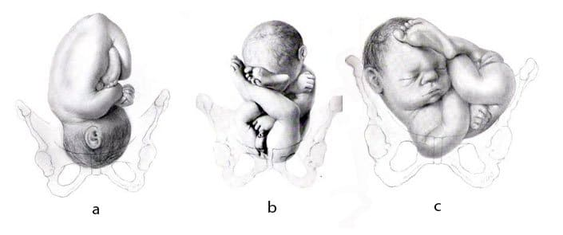

Para acomodar o feto durante toda gestação, a pelve feminina é mais larga do que nos homens; a pelve tem fundamental importância na proteção dos órgãos localizados na cavidade pélvica, também atua como ponto de fixação para os músculos do períneo e dos membros inferiores.
Servindo para sustentar o tronco e promover uma área para inserção das extremidades inferiores, atuando na transferência de peso para os membros inferiores; a diferença de tamanho entre pelve masculina e feminina, também é uma característica útil na determinação do sexo em ossadas e fósseis humanos.

Figuras A e B com bebês em situação longitudinal, pois o maior eixo do feto coincide com o maior eixo materno.
Na figura A a apresentação é cefálica, pois a cabeça irá nascer primeiro.
Na figura B a apresentação é pélvica, pois as nádegas irão nascer primeiro.
Na figura C a situação é transversal, pois o feto está “atravessado”.
A abertura superior da pelve humana pode ter até 4 formas:
Ginecóide: Arredondada, mais favorável ao parto. É a mais comum entre as mulheres.
Andróide: Forma de coração. É a mais comum entre os homens.